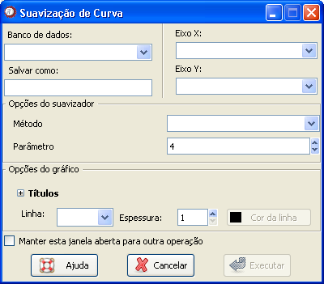

Suavização
de curva
Suavização
de curva
O caminho para essa função é: Análises

Figura 1. Janela "Suavização de curva".
O primeiro passo é selecionar o banco de dados onde está a variável de interesse. Para isso, é necessário que o banco já tenha sido aberto (detalhes sobre como abrir dados ou importar dados via ODBC).
Em seguida, deve-se selecionar as variáveis que serão utilizadas para a suavização. Escolha uma variável para a coordenada X do gráfico, no campo "Eixo X", e da mesma forma, uma variável para a coordenada Y, no campo "Eixo Y". Vale destacar que só faz sentido utilizar essa função para fazer a suavização de variáveis numéricas.
Um campo de preenchimento opcional é o "Salvar como". Esse campo permite a criação de um novo objeto que será armazenado no Epi-R, apenas com as duas variáveis selecionadas nos campos "Eixo X" e "Eixo Y".
O próximo passo é o preenchimento das Opções do suavizador. O primeiro campo se refere ao método de suavização desejado. Estão disponíveis no Epi-R os métodos de suavização utilizando splines, suavização polinomial, médias móveis e regressão local.
Além disso, para cada método, é necessário determinar um parâmetro de ajuste. Por exemplo, ao utilizar a suavização por splines, é necessário informar o número de graus de liberdade que se deseja atribuir ao ajuste. Para médias móveis, o parâmetro deve ser o número de observações usadas para calcular a média.
Depois de determinar as opções do suavizador, alguns itens opcionais podem ser preenchidos, nos campos referentes a Opções de gráficos. Essas opções são:
Títulos: As opções de "Título", "Subtítulo", "Rótulo X" e "Rótulo Y" não aparecem na janela automaticamente. Para preenchê-las, clique primeiro em Títulos. Os nomes dos rótulos devem se referir às variáveis selecionadas.
As outras opções se referem à linha da curva suavizada, que será apresentada como resultado da função. Vale destacar que o gráfico com as observações originais é apresentado em pontos, e na cor preta, não podendo ser alterado.
Linha: Nesse campo é possível escolher o tipo de linha desejado para a curva suavizada.
Espessura: Esse campo refere-se à espessura da curva suavizada.
Cor da linha: A cor padrão escolhida para a apresentação do resultado é preta. No entanto, para escolher qualquer outra cor, basta clicar nessa opção.
Uma vez que todas as opções desejadas estiverem marcadas, basta clicar em "Executar".
Para manter essa janela aberta e repetir a função, sem que seja necessário buscá-la no menu novamente, marque o campo "Manter esta janela aberta para outra operação". Lembre-se que as próximas curvas não serão tracejadas no mesmo gráfico, ou seja, o Epi-R criará, sobrepondo, um gráfico para cada suavização.